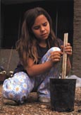

The Biology Project for Young Explorers
 For K-8 students
- The Biology Project for Young Explorers will include interactive biology activities and web-based laboratories.
For teachers
- The Project will include lesson plans and laboratory instructions.
The Manduca Project, a successful program tested by more than 30,000 students, will serve as the prototype for developing the Young Explorers section.
The Manduca Project provides a dynamic context for interdisciplinary learning.
Students
- raise their own caterpillars in the classroom
- keep detailed logs
- chart growth of insects
- compose poetry, songs and dances

Introduction | Funding | Existing Biology Project | El Proyecto Biologico
Advanced Biology | Young Explorer | Program for Teachers | General Public
The Biology Project
University of Arizona
July 25, 2000
Contact info: biology@email.arizona.edu
http://biology.arizona.edu/
All contents copyright © 2000. All rights reserved.